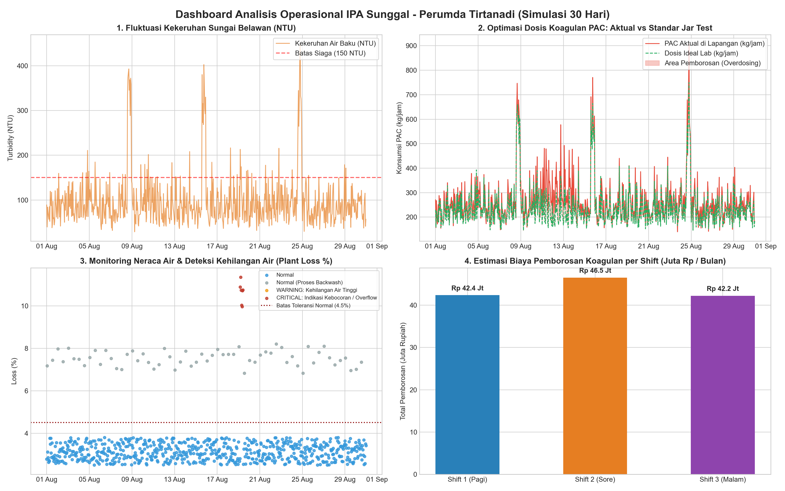

Mahasiswa Informatika (PJJ) Universitas Insan Cita Indonesia (UICI) dengan spesialisasi pemodelan basis data relasional, pemrosesan data deret waktu, dan visualisasi kinerja operasional industri. Berfokus pada penyelesaian tantangan riil pengolahan air minum di Perumda Tirtanadi - IPA Sunggal, Medan: pengendalian neraca air (Plant Loss), deteksi anomali kehilangan air, serta optimasi efisiensi biaya bahan kimia koagulan (PAC).
Seluruh data operasional yang disajikan dalam portofolio ini merupakan model data sintetis 30 hari yang saya kembangkan untuk kebutuhan simulasi analisis data, automasi ETL, dan evaluasi efisiensi operasional. Proyek ini tidak menggunakan ataupun mempublikasikan data internal rahasia Perumda Tirtanadi.
Sebagai mahasiswa Informatika semester 6 di UICI, saya mengombinasikan fondasi komputasi yang kuat dengan keterampilan praktis data analyst dan admin database. Di industri pengolahan air minum modern seperti Perumda Tirtanadi, data operasional harian berkapasitas besar atau inflow ribuan liter per detik, fluktuasi kekeruhan lumpur Sungai Belawan, dan jadwal pencucian filter memerlukan pengolahan yang presisi.
Melalui portofolio ini saya mendemonstrasikan bagaimana teknik data dapat langsung menjawab tantangan nyata instalasi menyelamatkan volume air terbuang (Plant Loss) dan menghemat biaya bahan kimia operasional hingga ratusan juta rupiah per bulan, sekaligus mengotomatisasi pekerjaan administrasi data manual.
Kompetensi terapan untuk kebutuhan analisis dan administrasi data operasional:
Pemodelan skema relasional, normalisasi tabel, agregasi analitik multi-dimensi, relasi multi-tabel terstruktur, subquery bertingkat, dan validasi integritas data produksi.
Manipulasi data terstruktur, analisis deret waktu (Time-Series) per jam dan shift kerja, penanganan anomali nilai hilang, indexing terstruktur, dan otomasi alur kerja data.
Data profiling, deteksi deviasi dan pencilan operasional menggunakan metode statistik IQR, evaluasi korelasi variabel proses, dan visualisasi tren distribusi performa.
Menerjemahkan parameter teknis instalasi ke metrik finansial terukur: kalkulasi persentase Plant Loss, optimasi biaya bahan kimia, dan rekonsiliasi neraca air BUMD.
Otomasi pelaporan berkala, integrasi spreadsheet multi-sumber (Pivot, Formula Dinamis), validasi integritas logbook lapangan, dan penyajian ringkasan kinerja manajemen.

Tantangan Riil: IPA Sunggal mengolah debit rata-rata ~8.700 m³/jam dari Sungai Belawan. Jika kebocoran pipa internal transmisi atau luapan reservoir melebihi batas wajar (3–5%), terjadi pemborosan air bersih dan biaya listrik pompa yang signifikan.
Tantangan Riil: Tingkat kekeruhan (NTU) Sungai Belawan berfluktuasi tajam saat curah hujan tinggi di hulu. Pengaturan kran kimia koagulan yang dilakukan manual per shift kerja rawan boros anggaran atau air keruh.
Total Estimasi Pemborosan Bahan Kimia yang Dapat Dihemat per Bulan
Waktu Pemrosesan Otomatis dari Berbagai Format Spreadsheet ke Basis Data Terpusat
Tantangan Riil: Di instalasi lapangan, pencatatan harian (debit pompa, pH, sisa klorin, dan pemakaian bahan kimia) sering kali tersebar di berbagai lembaran formulir Excel per seksi mekanik dan laboratorium dengan format yang tidak seragam dan rawan sel kosong.
Saya siap menerapkan dedikasi, integritas, dan keahlian data ini dalam program magang di Perumda Tirtanadi Provinsi Sumatera Utara (Kantor Pusat Jl. Sisingamangaraja No. 1 maupun Instalasi Pengolahan Air Sunggal).
{kind=link}